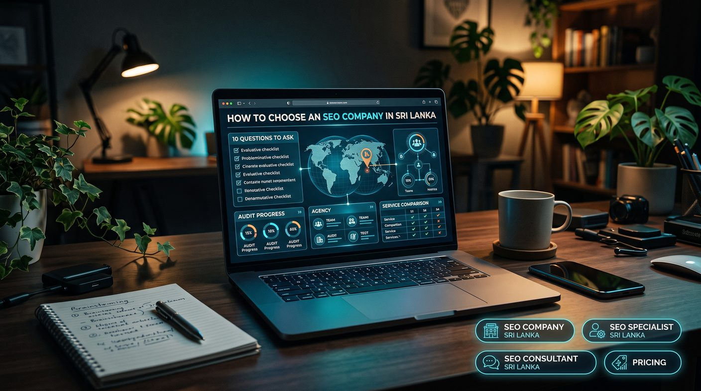

To choose an SEO company in Sri Lanka, ask how it will approach your business, request relevant case studies with verified data, agree how success is measured, get a written breakdown of pricing, confirm who does the work, check it follows Google spam policies, set reporting, timelines and account ownership, and review contract and exit terms. Avoid anyone guaranteeing first-page rankings.
- Why choosing the right SEO company matters
- 1. What is your SEO strategy for my business?
- 2. Can you show relevant SEO case studies?
- 3. How do you measure SEO success?
- 4. What is included in your SEO pricing?
- 5. Who will actually work on my website?
- 6. Do you follow Google's Search Essentials and spam policies?
- 7. How will you communicate and report progress?
- 8. How long will SEO take to show results?
- 9. Will I own my website, content and SEO accounts?
- 10. Can you explain the risks, limitations and exit terms?
- Red flags when hiring an SEO company in Sri Lanka
- SEO company vs SEO specialist vs SEO consultant
- How to compare SEO proposals fairly
- Conclusion: choose a partner, not just a package
Why choosing the right SEO company matters
Search engine optimisation can help your website become more visible to people searching for your products or services. Depending on your business, this may involve improving technical performance, researching keywords, creating useful content, optimising service pages, earning relevant backlinks and strengthening local search visibility.
However, SEO requires informed decisions and ongoing work. Poor recommendations can waste your budget, attract irrelevant visitors or create risk if a provider uses manipulative tactics. Even legitimate SEO work cannot guarantee a particular position on Google, because search results depend on many factors outside a provider's control.
Before comparing providers, define what you want SEO to achieve. Your goal might be more qualified enquiries, online sales, local customers, bookings or visibility for specific services. Clear objectives make it easier to judge whether an SEO proposal is appropriate.
If you are comparing providers, start by reviewing our SEO company in Sri Lanka page.
1. What is your SEO strategy for my business?
A reliable SEO company should be able to explain how it will approach your website and why the proposed activities matter. The strategy should reflect your industry, competition, website condition, customers and commercial objectives.
Ask the provider to explain its initial assessment and priorities. Depending on your needs, a sensible plan may include:
- Technical SEO checks for crawling, indexing, page performance and site structure.
- Keyword research based on customer needs and search intent.
- On-page optimisation for important service and product pages.
- Content improvements that answer genuine customer questions.
- Relevant link-building and brand authority activities.
- Local SEO improvements where geographic searches matter.
- Tracking for organic traffic, enquiries, leads or sales.
The company should explain which activities matter most, what it will do first and how progress will be assessed. A proposal that lists generic tasks without connecting them to your business goals deserves further questions.
Warning sign: a provider claims the same package or checklist will produce identical results for every website, regardless of its starting condition or competition.
2. Can you show relevant SEO case studies?
Past work helps you understand how an SEO provider approaches challenges, but a portfolio should be evaluated carefully. Ask for examples that resemble your business in industry, market, website size or objectives.
A useful case study should explain:
- The business challenge and starting position.
- The website or search visibility problems identified.
- The work completed and the reasoning behind it.
- The period measured and the data source.
- The changes in relevant metrics, where verified.
- Any limitations, external influences or ongoing work.
A local service business may care about qualified enquiries and calls, while an ecommerce business may focus on organic revenue, transactions and product-page visibility.
Do not judge a provider solely by a screenshot showing a keyword ranking first. Rankings vary by location, device, search history and time. Ask whether the improvement also contributed to relevant traffic or business outcomes.
Review the provider's SEO case studies and ask for clarification about the methods and results presented. Any figures in a case study should be supported by reliable evidence and reported honestly; ours show real Search Console data, for example LankaTourDriver and possystem.lk.
3. How do you measure SEO success?
Before signing a contract, establish how the company will define progress. Rankings and organic traffic are useful indicators, but they do not always represent business success.
Depending on your business model, relevant metrics may include:
- Organic clicks and impressions from Google Search Console.
- Visibility for relevant, commercially valuable keywords.
- Qualified leads, calls, enquiries or booking requests.
- Organic transactions and revenue for ecommerce websites.
- Conversions from key service or landing pages.
- Technical issues resolved and important pages indexed.
- Local profile interactions and enquiries where applicable.
Ask how the company will establish a baseline, report results and distinguish SEO performance from other marketing activity. Confirm which analytics and tracking systems will be used and whether your business will retain access to them.
Be cautious if the provider reports only selected keyword positions or traffic increases without explaining whether those changes attracted the right audience.
4. What is included in your SEO pricing?
SEO pricing in Sri Lanka varies with the scope of work, website complexity, competition, specialist involvement and the amount of ongoing support required. A low-cost package may suit a limited project, while a competitive market or technically complex website may need more extensive work.
Ask for a written breakdown of the services included in the proposed fee. Confirm whether the price covers:
- Initial website audit and strategy.
- Keyword research and competitor analysis.
- Technical recommendations and implementation.
- Content planning, writing or editing.
- On-page optimisation.
- Link acquisition or digital PR activities.
- Local SEO and Google Business Profile work, if required.
- Reporting, meetings and ongoing support.
Also ask about one-time setup fees, taxes, third-party software costs, additional content charges, contract duration and cancellation terms. Find out whether development work is included or whether your own developer must implement technical recommendations.
Read our guide to SEO costs in Sri Lanka and review the available SEO pricing and packages before comparing proposals.
Important: the most expensive service is not automatically the best, and the cheapest is not necessarily poor. Compare deliverables, expertise, transparency and suitability for your objectives.
5. Who will actually work on my website?
Some SEO companies carry out the work internally, while others use contractors or specialist partners. Neither structure automatically determines quality. What matters is whether the people doing the work have the relevant expertise and whether responsibilities are clear.
Ask who will handle strategy, technical SEO, content, link building and reporting. Find out who your main contact will be and who is responsible for implementing recommendations.
If the project requires web development, confirm whether the provider can work with your existing technology. A website built with Laravel, React, Next.js or another custom framework may need a different implementation approach from a standard content management system.
For an expert-led engagement, you can also compare an SEO specialist in Sri Lanka with a larger agency. An individual specialist may offer direct communication, while an agency may provide a wider range of resources. The right choice depends on the work required and your preferred working arrangement.
6. Do you follow Google's Search Essentials and spam policies?
SEO methods matter because tactics designed to manipulate search rankings can expose a website to ranking losses or manual actions. Ask the provider how it approaches link building, content production, structured data and other optimisation activities.
Responsible practices generally focus on:
- Creating useful, original content for people.
- Making important pages accessible to search engines.
- Improving site structure and technical quality.
- Earning relevant mentions and links through legitimate activity.
- Representing the business accurately in local listings.
- Avoiding fake reviews, misleading business details and manipulative link schemes.
Ask for a clear explanation of any proposed backlink campaign. Find out how websites are selected, whether links are paid or sponsored, how placements are disclosed and how the provider avoids link schemes. Our guides to building backlinks in Sri Lanka and checking whether backlinks are toxic show what responsible link work looks like.
Be careful with promises of thousands of backlinks, automated link packages or networks of websites created mainly to manipulate rankings. A large backlink count does not automatically indicate quality.
Google also does not guarantee that any website will rank first, and no SEO company can control Google's algorithm or every competitor's activity.
7. How will you communicate and report progress?
Good communication makes an SEO engagement easier to manage. You should know what has been completed, what is planned next, which issues need your approval and where your team needs to provide information.
Before hiring a provider, agree on:
- Reporting frequency and report format.
- The metrics that will be monitored.
- How urgent technical issues will be communicated.
- Who approves content, website changes and external placements.
- How meetings and questions will be handled.
- Which accounts, dashboards and files you can access.
A report should explain the significance of the work, not merely list completed tasks. If a technical issue is fixed, for example, the report should describe the problem, the pages affected and how the resolution was checked.
Ask whether the provider will give you access to Google Search Console, Google Analytics and other relevant business accounts. Your company should keep appropriate ownership and administrative control of its digital assets.
8. How long will SEO take to show results?
SEO is an ongoing process, and no reliable universal timeline exists for reaching a specific ranking. Some improvements, such as correcting a technical problem or updating a title, can be implemented quickly, but the impact on search performance may take longer to evaluate.
The time needed depends on factors such as:
- Your website's current technical and content condition.
- The competitiveness of your target search terms.
- The quality and relevance of existing content.
- Your website's reputation and backlink profile.
- The scale and speed of implementation.
- Changes in competitors, demand and search algorithms.
Ask the provider to explain what can reasonably be completed during the first month, which outcomes may take longer and how progress will be evaluated. A phased plan with measurable milestones is more useful than an unsupported promise of first-page rankings within a fixed number of days.
Be especially cautious of guaranteed rankings for competitive keywords or claims of secret access to Google's ranking systems.
9. Will I own my website, content and SEO accounts?
Your website, domain, analytics accounts and business listings are important business assets. Before starting an SEO engagement, make sure ownership and access arrangements are documented.
Clarify the following:
- Who owns the domain and hosting accounts?
- Who controls Google Search Console and Google Analytics?
- Will you receive access to content, reports and keyword research?
- Who owns newly created articles, landing pages and design assets?
- What happens to deliverables and account access when the contract ends?
- Are any tools, licences or third-party subscriptions tied to the provider?
Grant access through appropriate user permissions rather than sharing personal passwords unnecessarily. Use multi-factor authentication where available and make sure account recovery details remain under your control.
Ask for a clear handover process in the contract. This reduces the risk of disruption if you change providers or bring SEO work in-house.
10. Can you explain the risks, limitations and exit terms?
Every SEO engagement involves uncertainty. Search engines change, competitors improve and business demand fluctuates. A professional provider should discuss risks honestly rather than claiming negative outcomes are impossible.
Before signing, ask:
- What happens if the agreed work does not produce the expected progress?
- How will you investigate a decline in traffic or rankings?
- How are algorithm updates and technical incidents handled? (See our guide to recovering from a Google algorithm update.)
- What are the notice period and cancellation conditions?
- Will you provide a handover of work, reports and account access?
- Are there any long-term commitments or additional termination fees?
Look for a provider that explains both opportunities and limitations. It should distinguish measurable deliverables, such as completing an audit, from outcomes it cannot guarantee, such as a particular ranking or revenue increase.
Compare contract terms carefully, especially if the proposal includes a long minimum commitment or claims that you will lose all SEO progress if you stop working with the provider.
Red flags when hiring an SEO company in Sri Lanka
The following warning signs deserve closer scrutiny before you commit your budget:
- Guaranteed first-place rankings: no provider can guarantee a specific organic ranking.
- Unclear deliverables: the proposal does not explain what work will be completed.
- Unverifiable case studies: results are presented without context or credible evidence.
- Mass backlink promises: the company emphasises link volume rather than relevance and quality.
- No reporting access: you cannot review the data used to evaluate performance.
- Secretive methods: the provider refuses to explain its strategy or risks.
- Fake reviews or locations: the strategy relies on misleading business information or manipulated reviews.
- Pressure to sign immediately: you are not given reasonable time to compare proposals and terms.
- Unclear ownership: the provider retains control of essential accounts without a documented reason or exit plan.
One warning sign does not always tell the whole story, but several together should prompt careful questions before you proceed.
SEO company vs SEO specialist vs SEO consultant
These terms can overlap, but they often describe different service arrangements. Understanding the differences helps you choose a provider that fits your business.
SEO company
An SEO company typically offers a defined set of services and may have several people working on strategy, content, technical SEO and reporting. Ask how responsibilities are divided and who will manage your account.
SEO specialist
An SEO specialist focuses on SEO implementation and optimisation. A specialist may work independently or as part of a wider team. This option can suit businesses that want direct access to someone handling the technical and practical work.
SEO consultant
An SEO consultant often focuses on analysis, strategy, prioritisation and recommendations, although some consultants also implement changes. Confirm whether implementation is included or whether your internal team must complete the work.
Compare the actual scope, expertise, availability and responsibilities rather than relying on the job title alone. Learn more about an SEO consultant in Sri Lanka and compare the arrangement with your requirements.
How to compare SEO proposals fairly
Once you have spoken to two or three providers, compare their proposals against the same criteria. This makes it easier to see what you are paying for and whether each proposal addresses your business priorities.
| Evaluation area | What to look for |
|---|---|
| Strategy | A plan based on your website, audience and commercial goals |
| Deliverables | Specific work items, responsibilities and expected completion periods |
| Evidence | Relevant examples and clearly explained measurement methods |
| Pricing | Transparent fees, exclusions and additional costs |
| Communication | Clear reporting, account access and an agreed contact process |
| Compliance | Methods that avoid misleading practices and manipulative schemes |
| Contract | Reasonable terms, asset ownership and a documented exit process |
A useful proposal should make it possible to understand what will happen after you sign. If the scope is unclear, request a written clarification before you decide. A SEO audit or our free SEO checker is a low-cost way to compare how different providers read the same website.
Conclusion: choose a partner, not just a package
Choosing an SEO company in Sri Lanka should involve more than comparing prices or accepting ranking promises. Ask how the provider will approach your business, what evidence supports its experience, how it measures progress and whether its methods follow search engine guidelines.
Review the scope, reporting arrangements, account ownership and contract terms before committing. A clear working relationship makes it easier to evaluate performance, adjust priorities and protect your business assets.
If you are looking for SEO support, explore our SEO company services, learn about working with an SEO specialist or compare the options on our pricing page. Choose the service that best matches your goals, budget and implementation needs.